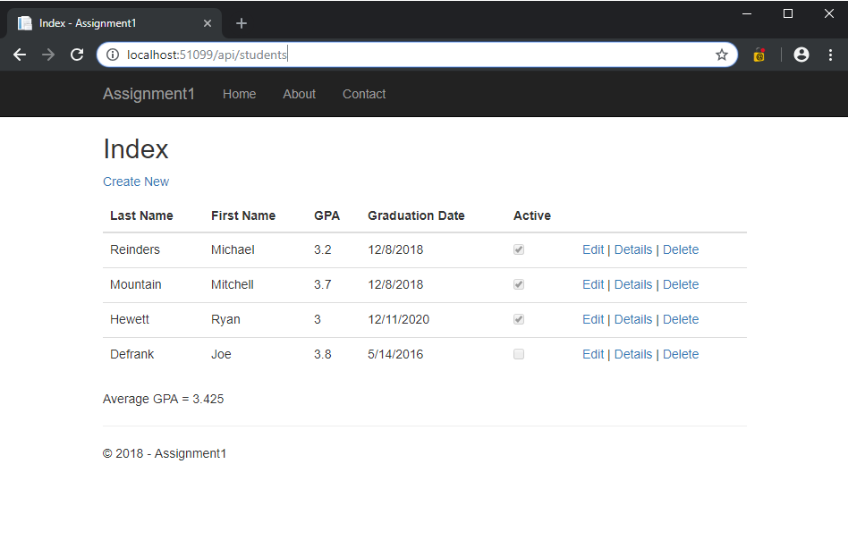

Portfolio
Websites | Web-Apps | Desktop | Mobile
Michael-Reinders.com is a static website created using simple HTML, CSS and Javascript. The goal of this website was to design a beautiful, professional portfolio website while using a minimal amount of code. The result is a stunning, simplistic and informative website that is both responsive and optimized for mobile devices.
Quantummark.com is a Corportate Website that utilizes Wordpress as its Content Management System. The website uses the Total Wordpress theme, but many of its features include custom HTML, CSS and Javascript to achieve some of its more ambitious design goals, including all About and Service webpages and a custom coded Contact form.
.NetCore MVC Application
This is the first application that introduced me to the MVC framework. This application utilizes a "Students" controller wired with a Database that uses a Model "Student" to display student information in various Razor Pages (or Views). This application was created with .NetCore 2.0 and Visual Studio.
.NetCore API
This is the first API (Application Program Interface) I created using .NetCore in Visual Studio and testing was completed using Postman. Like my first MVC project, this API utilizes a "Students" controller wired with a Database that uses a Model of "Student" to write and store student information. As an API, there is no view involved. Instead inputs are made using POST HTTP requests, and data output is made using GET HTTP requests which populates as JSON.
Ruby on Rails Application
For my final Project in my Server-Side Programming class I was tasked to learn something new that was not covered in class. I chose to learn the Ruby on Rails framework from scratch and on my own. In order to compare Rails to .NetCore I decided to follow the same type of projects I created for both my MCV and API application. The process took about two weeks but I found Rails and the Ruby Language to be quite easy to develop with. Quite opposite of .NetCore with Visual Studio, Ruby on Rails starts with the bare minimum amount of code but it allows you total control over how your application is built. In the end I think I liked Ruby on Rails more than .NetCore.
UNR Advising Software
This desktop application was created for my UNR Inforamtion Systems capstone course. The clients/users are UNR Advisors and the application is designed to import current excel files used in the Major application process. The software displays each student and their qualifications and provides a simple User Interface for advisors to Accept, Deny or Bridge each student's applicaiton. Written in Visual Basic using Visual Studio.
Hotel Reservation App
This Android application is designed to mimic a simple Hotel Reservation system that allows users to select from four different hotels, select their desired room type, enter user information, select a Check-in and Check-out Date, request any special needs/requests and review their reservation. This Android application was creating using C# and Xamarin Forms in Visual Studio.